Dr. Wendy Cotton — my person
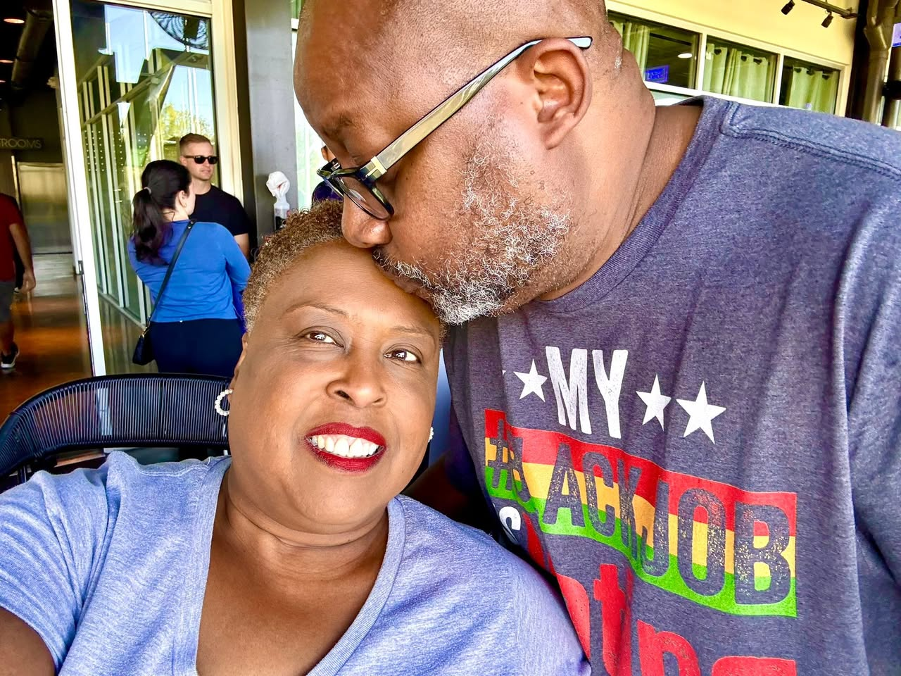
Happy Birthday to my queen. Every single year.

The day she defended her Ph.D. — Hampton University

Dr. Wendy Knox Cotton — Hampton University

Alpha Phi Alpha — JSU. That's me, second from the left. 18 of us crossed that line.
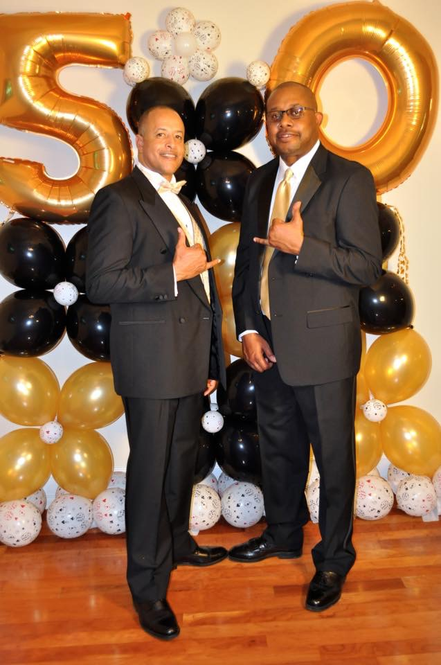
Black and Gold. Suited up with my brother. 1906 forever.
ΑΦΑ — Alpha Phi Alpha Fraternity, Inc. First of All, Servants of All, We Shall Transcend All.
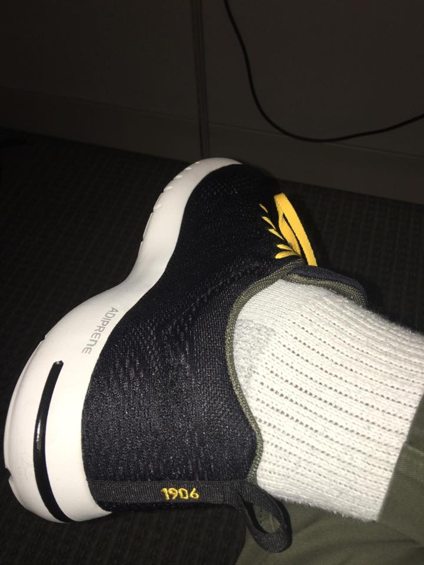
The drip is intentional. 1906 on the sole.

HBCU proud — always and forever

JSU made me. Go Tigers.

Atlanta bred me too

This is not a hobby. This is a calling.

Land AND sea. Don't come hungry.

Big Green Egg. Not just a smoker — a religion.

Best office view I've ever had

San Francisco — always exploring
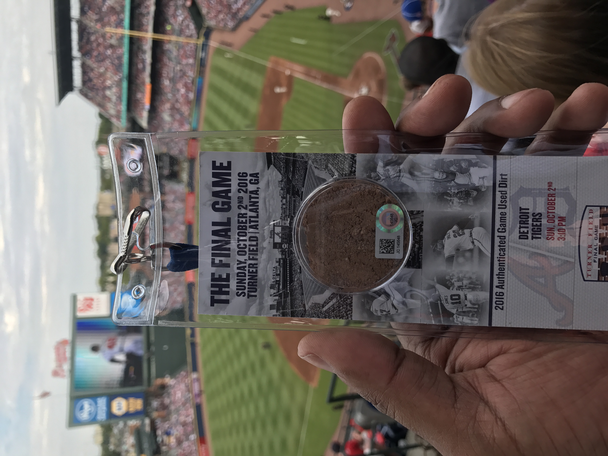
Turner Field. Final game. October 2, 2016. Authenticated dirt from the field — a piece of Atlanta history worth keeping.

Dominican Republic, shot with the drone. Almost didn't make it through customs with that thing.

The Lorraine Motel, Memphis. Where Dr. King was murdered. Standing here was something I'll never forget.

Ray Charles. Marvin Gaye. Billie Holiday. Jackie Robinson. JSU. Hampton. Home.

1969 Ebony — Shirley Chisholm. The first. History lives on my wall because history matters.

Say it clearly. Say it loudly. Black Lives Matter.

Sasha, Alpha, Symba & Nalah — my whole heart

Sasha says hi

Louise Cole — Grandma. "The original repurposer." Her pound cake melted in your mouth, her favorite song was "Jesus on the Mainline," and she left $.50 on the table for me every single morning before the sun came up.
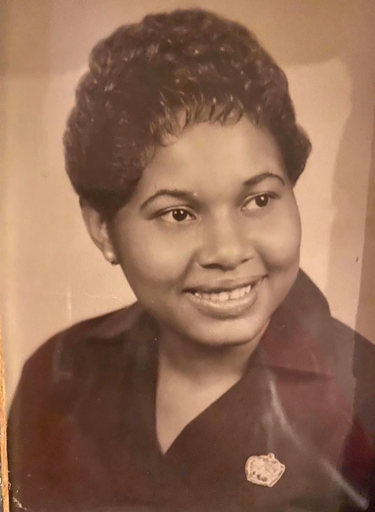
Lillian Opal Cotton — Mama. She worked at a Chicago engineering firm for 25 years and always told me to be an engineer. August 2022, I finally became one. We did it, Mom.
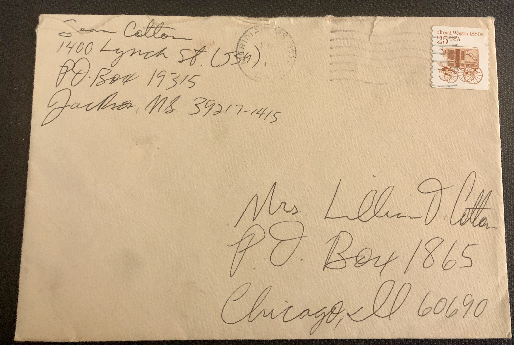
A letter I wrote to Mama from JSU — my address on Lynch Street, her address in Chicago. Still have it.

Robert's Show Club — 6622 S. Park Ave (now Martin Luther King Drive), South Side Chicago. Nat King Cole, Sammy Davis Jr., Count Basie, Lionel Hampton all performed here. Mama was there.

Mama seated on the left, Aunt Mattie in black with white earrings. Late 1950s — dressed up, stepping out, fully in their moment. Found tucked in Mama's photo books. Over 60 years old.
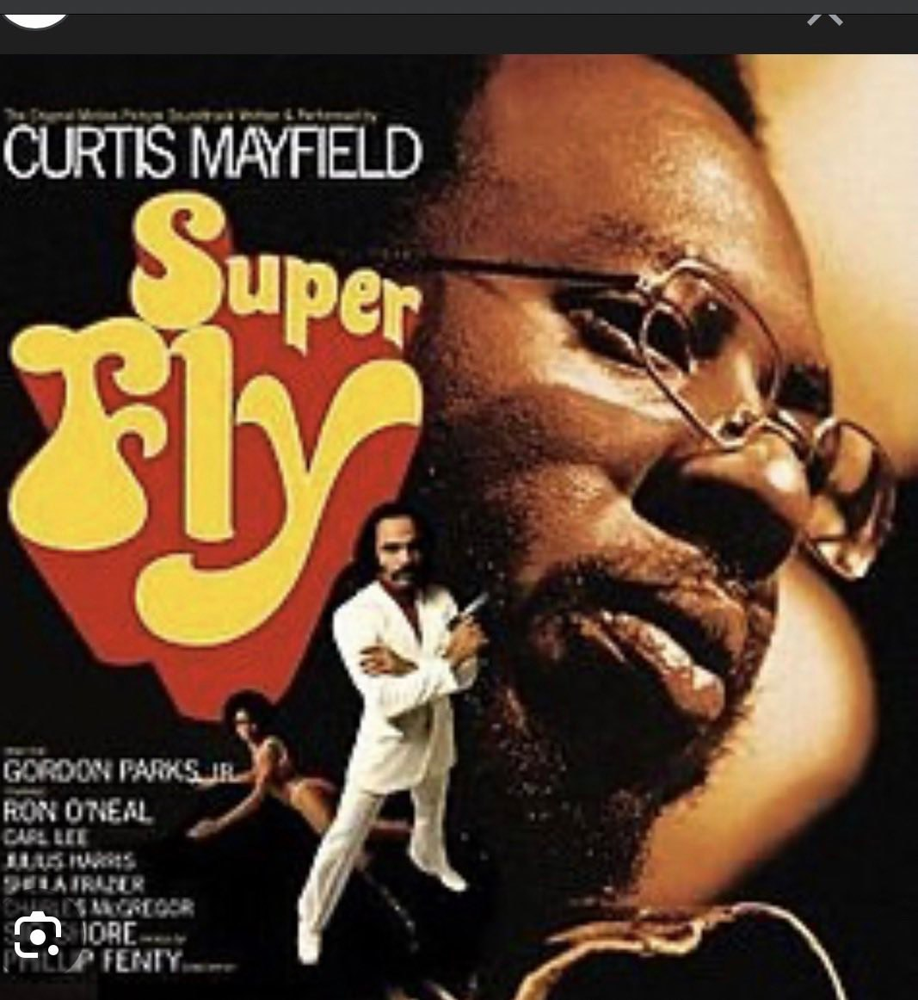
Super Fly — Curtis Mayfield. One of two albums that lived in Mama's record player. I used to stare at that cover for what felt like forever.
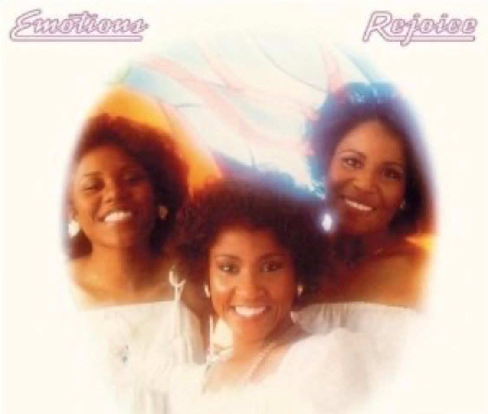
Rejoice — The Emotions. The other album on Mama's record player. Still listen to both. Still brings me back to her house, her warmth, and everything she was.

The beginning of a lifelong coffee habit.

Family first — always
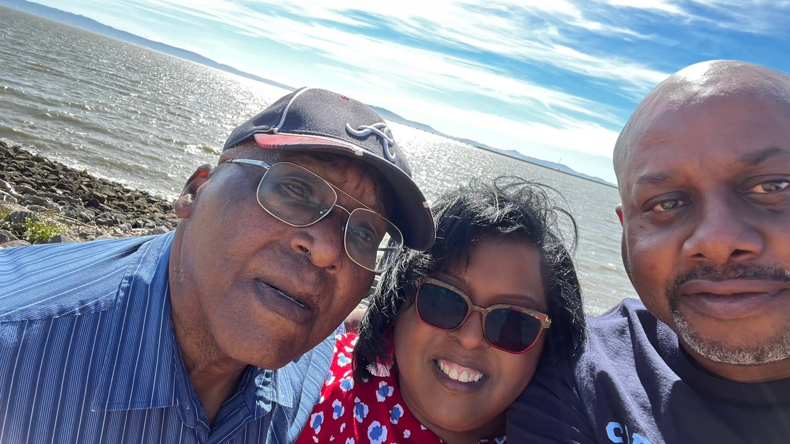
Good people, good water, good day. Sean, Dr. Wendy, and Winston Knox.
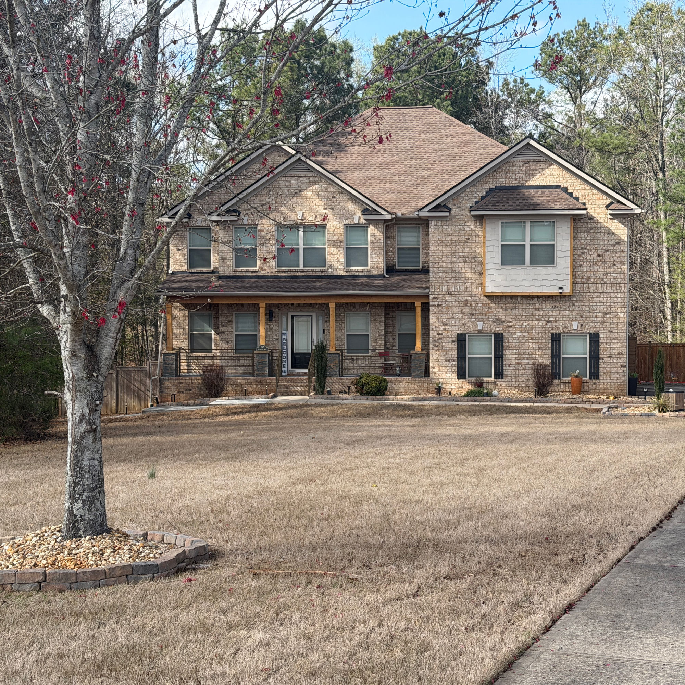
Home base. Did some work — new colors, materials, added the railing. It's ours.

The man cave. Smart lights, 16 million color choices, and the vibe is always right.

A little freedom never hurt anybody

Proud uncle — Aniyah and Kinsley at Spelman, Naomi at Stanford. They did that.

SMC3 Hackathon 2025 — yes, that's me in LEGO form

Meridian High School JROTC — where the discipline started
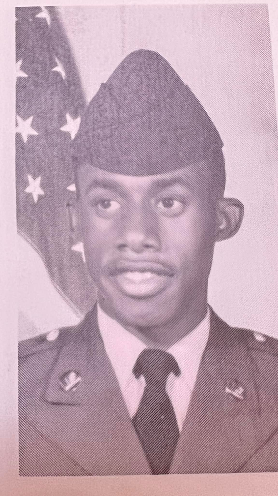
Fort Leonard Wood, Missouri. Basic Training, 1987. Delta Company, 3rd Platoon. This is where it started.
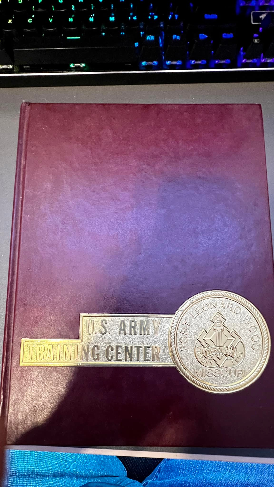
U.S. Army Training Center, Fort Leonard Wood, Missouri. Started: June 4, 1987. The book I still have.
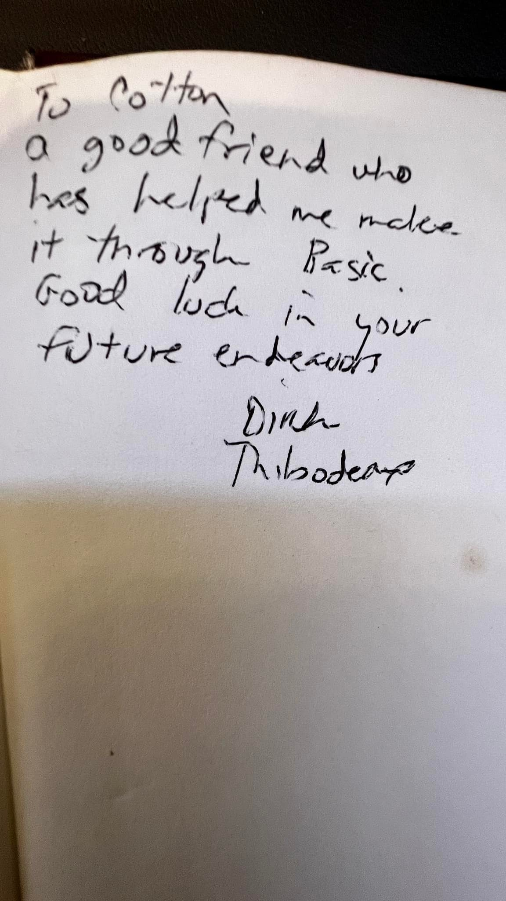
"To Cotton — a good friend who has helped me make it through Basic. Good luck in your future endeavors. — Dirk Thibodeaux." Kept this for 38 years.
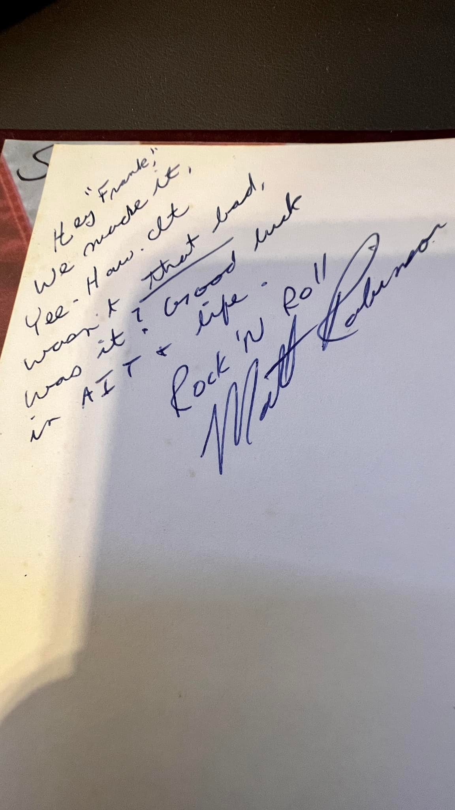
"Hey 'Frank' — We made it! Yee-Haw. It wasn't that bad, was it? Good luck in AIT & life. Rock 'N Roll — Matt Robinson." Brothers I made in 1987.

This Too Shall Pass — words I live by

Home. History. Pride.


 Me & my brother Daryl
Me & my brother Daryl